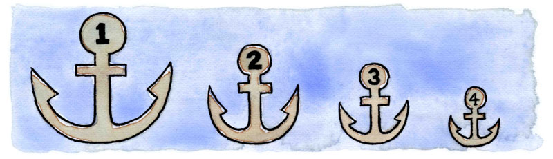

Posts
Link Source Ordering
Posted on .
Category: Development
Introduction
If you are about to design a new website then please read this article first. By following some simple rules regarding link ordering, you can vastly improve the Search Engine Optimisation of your entire website.
It has been common knowledge for a while now that content source ordering is important for optimising a page. Content that comes closer to the top in a page's HTML source code is given more priority by the search engines than content further down. This is why it helps to build layouts where the main content column comes before any side columns. See my liquid-layouts with column source ordering for a good example of this. The point I want to make is this: the source order does not only apply to content, it also applies to links!
Link source ordering
Years ago I discovered that the highest ranking page on my website was actually one of my least important pages! It was my mailing list subscription page, and it was ranking higher than everything else. I was shocked because there was nothing on this page except for a basic email subscription form. How could a page with no content get such a huge ranking?
The design of my website was not unusual. I had a logo in the top left corner, followed by a standard navigation bar across the width of the site and two columns below that. The main content was in a wide column, with a sub menu on the side in a narrow column. But then at the top right of the page I had a little link to my mailing list page - this was the culprit!
Best Art and Culture tours in Bali, Indonesia
Posted on .
Travelling

The small Indonesian island province of Bali is one of the nation’s top tourist spots, celebrated for its temples, artistic communities and incredible landscapes. Discover the best art and culture tours Bali has to offer.
Bali Agung Tours – Tanah Lot Tour
Known as the land of a thousand temples, Bali is home to more than 5,000 stunning examples. This makes it difficult to know where to begin. Tanah Lot temple is one of the most famous, known primarily for its unusual position atop a rock formation at the edge of the sea. Bali Agung Tours brings travelers to the temple at sunset, taking advantage of the warm glow produced by the last rays of daylight. Although the temple is visited at the end of the day, tours begin at 8:30am. It takes visitors to other locations including the Suwung, Celuk, Kemenuh and Kayuamba villages as well as the spectacular waterfall at Tegenungan.

Bali Bintang Tour Company – Bintang Downhill Cycling Tour
The Bintang Downhill Cycling Tour is not a typical bicycle adventure. It uses the bike as a peaceful and exhilarating way to journey around the Northeastern area of Kintamani. Groups are led through the region’s lush, green landscape to visit ancient Hindu temples and local craftspeople on the way to the charming and authentic village of Pejeng. To begin the tour guests are brought from their hotels to enjoy a morning coffee while soaking in the majestic sights at Lake Batur. Later in the day a traditional Indonesian lunch, prepared in the open kitchen of a Balinese family, is enjoyed in a pleasant garden setting. The price of the tour includes a mountain bike, helmet, water, coffee, a soft drink and lunch as well as transport to and from the hotel.